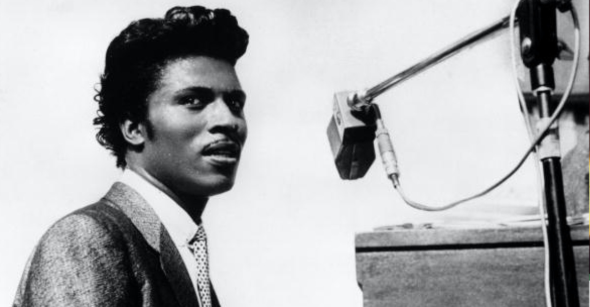

Little Richard

Born December 5, 1932 in Macon, Georgia. Currently 86 years old.
Began career in 1947, focusing on Rhythm and Blues, Gospel, Soul.
Songwriter, Pianist, and Vocalist.
Biggest hits include Tutti Frutti, Good Golly Miss Molly, Long Tall Sally, and Lucille.
Inducted into the Rock and Roll Hall of Fame as part of its first group of inductees.